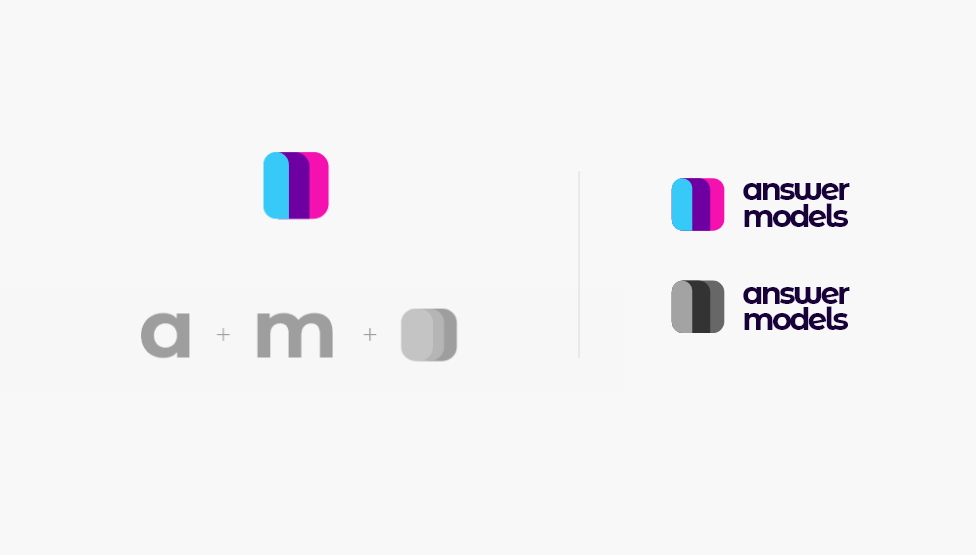
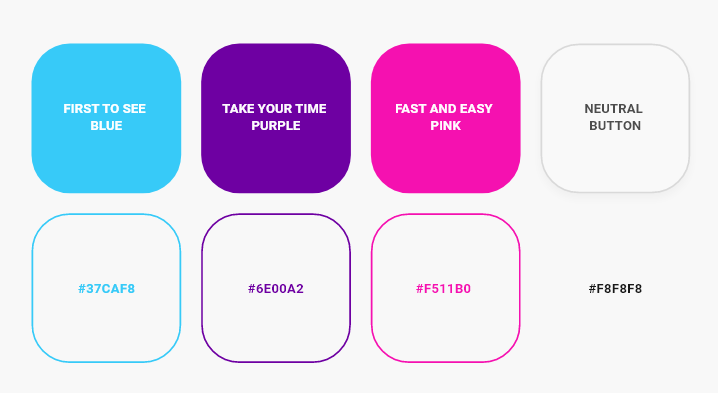
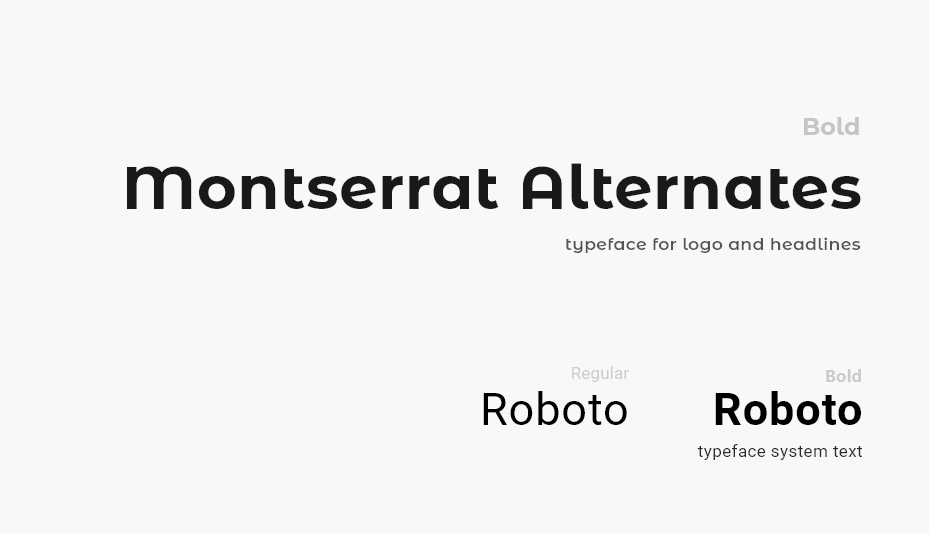
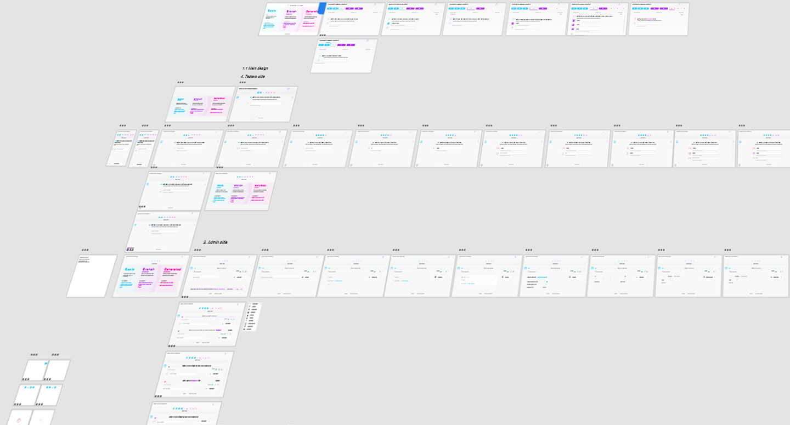
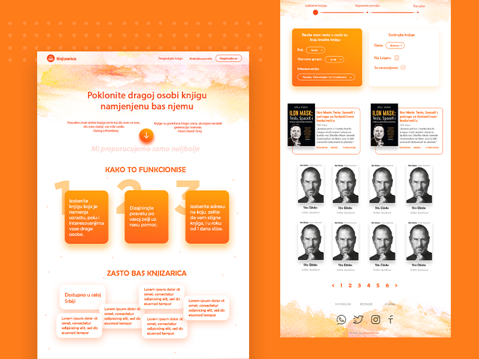
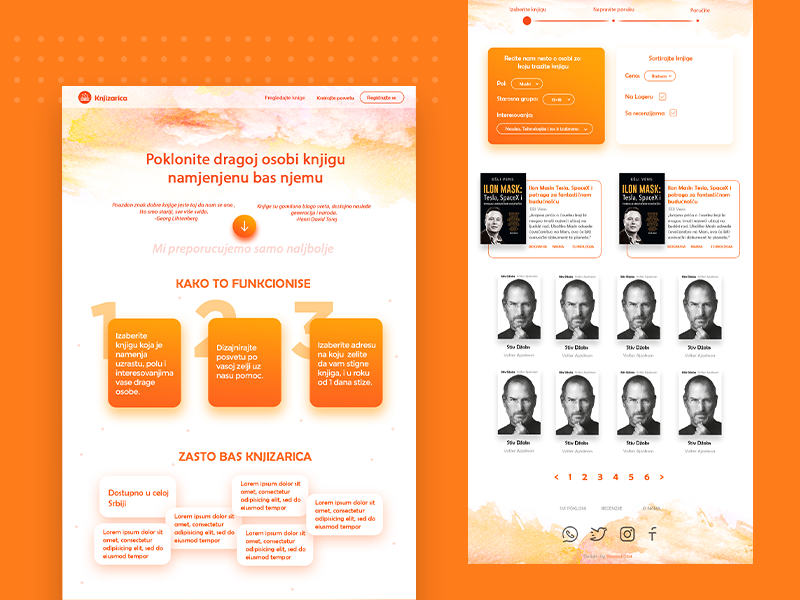

PROJECTS
Answer Models
Answer Models
Answermodels is the first product of a startup company. They aim to create an application for creating smart forms. I had the pleasure to work on the branding and UI&UX design of the application.

Logo
The idea of a logo came naturally. It symbolizes the pack of cards and the initial letters A and M. Logo is ready to serve as an icon as well.

Colors and shapes
As the most seen picture of the product will be the application itself, we agreed on making it the center of branding. Each element is crafted and designed to communicate the idea of the application.The colors are a very important part of the application as their goal is to guide the user's behavior. Following the requirements, I found the perfect color combination.

Typography
Two typefaces are used, one is Montserrat Alternative fontand Roboto font.Montserrat Alternative font was a great choice for a logo's text because it matched the letters "a" and "m" from the logo. It is a unique and not widely used typeface witch makes it a good choice for making the logo more memorable.
On the other hand, Roboto became a complementary font. Because it is widely used it will create a sense of familiarity.

UI and UX
The UI design was made following the company requirements. It looks familiar and intuitive, like Google's material design. Unfortunately, because of the company's policy, this part of the project cannot be shown yet.
The second version of the logo is desaturated, combines perfectly with the clean design of the
application.
Logos
Logos

A marker
A marker
"A marker" is a non-commercial project developed for my personal use only.
It is, simply, a tool for marking paragraphs in three different colors.

Logo
Letter A is the highest grade in schools. In order for "a marker" to become "A marker", I've combined the persona icon with the letter A. Round edges indicate the playfulness of the whole application.Explanation
It is useful for keeping track of questions that need to be relearned or repeated. There are many similar applications on the market. However, the beauty of programming is its unlimitedness.Features
Nondistracting is the most important characteristic of "A marker". A few features are lightly built-in.Motivational quotes are only appearing on the top of the screen for a short amount of time.
Buttons are indicating keyboard shortcuts that improve the user's experience.
Breathing animation is the most useful feature, and yet very rare to find in other similar applications. While learning or reading, the most important technique is 5-second deep breathing. It is a great for prolonging attention span, and for better understanding of the content. With this simple animation, the subconscious mind can mimic the duration of the breath. While you can continue paying attention to the learning.

Break for 5 minutes
"The brain cannot focus on a single task for more than 25 minutes at a time." If you don't make a pause, your brain will go into daydreaming. When the timer ends, the screen is set to the background and lasts 5 minutes. The background is a reminder to look outside and rest the eyes.See a demo. Please note that this application is developed for a specific use, with no exceptions planned or programmed.
Experimental
Experimental
These are some shots that I've done for friends, school or myself.
 


A marker
I cannot wait for the next project.